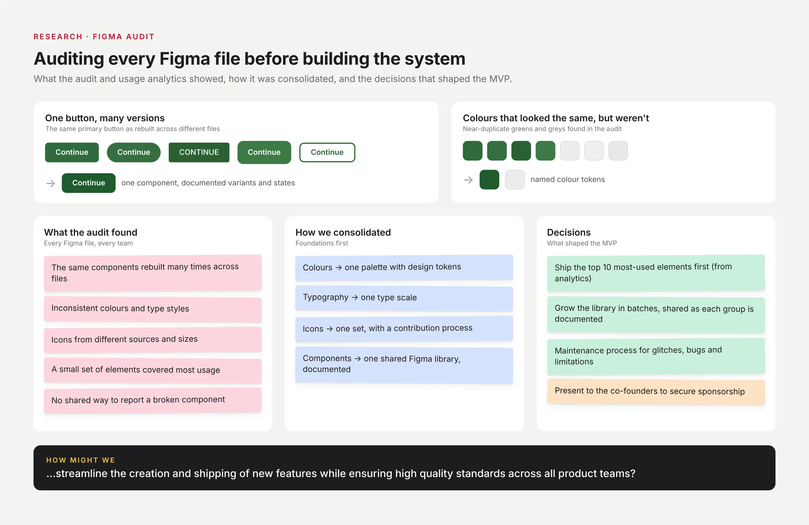
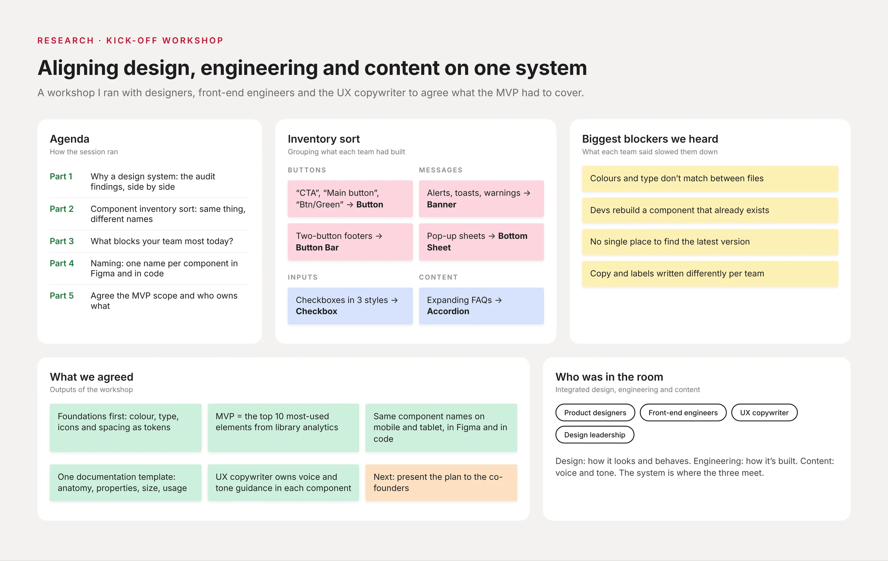
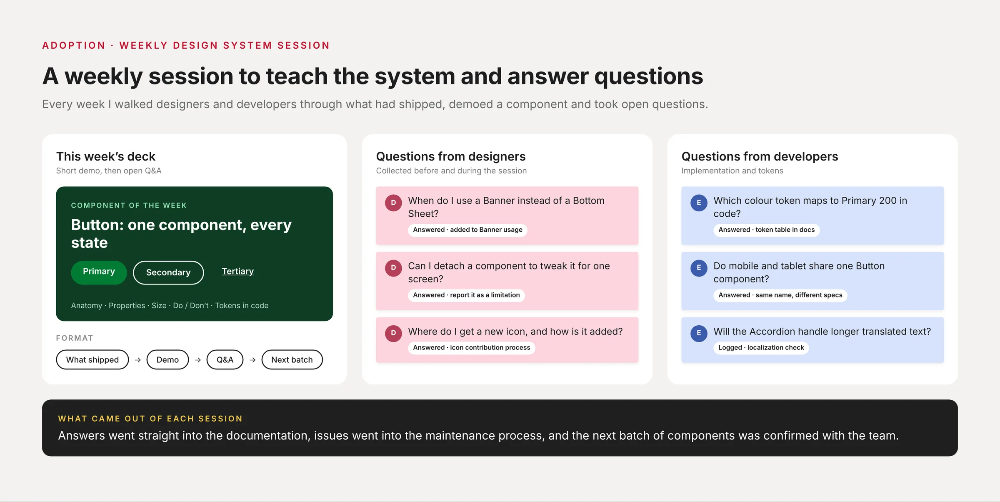
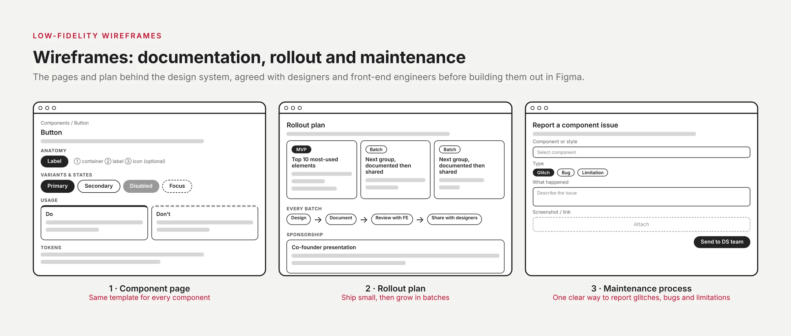
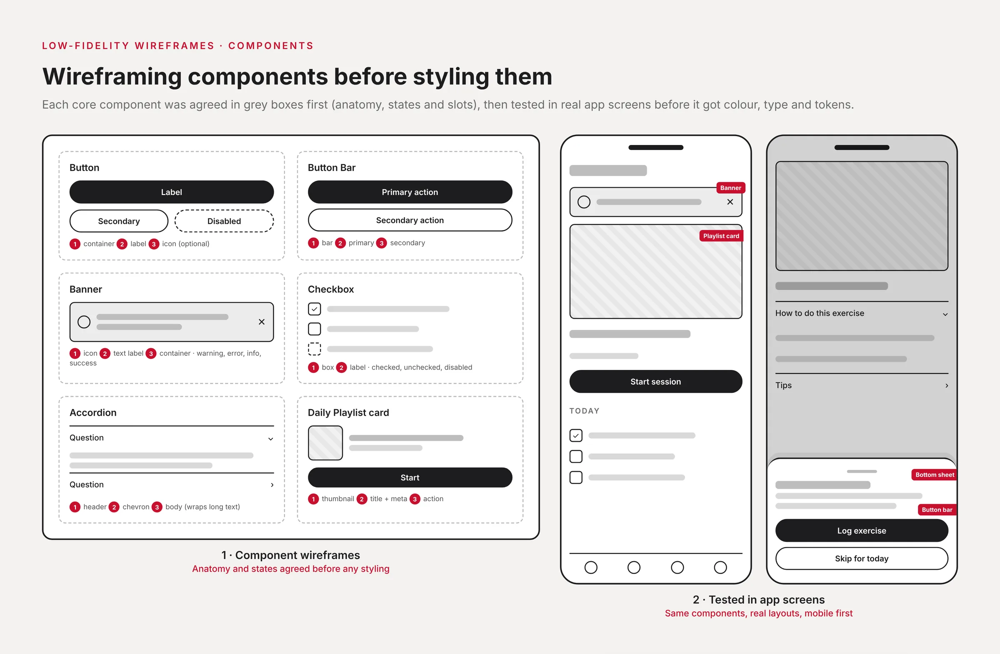

Problem Statement
How might we streamline the creation and shipping of new features while ensuring high quality standards across all product teams?
Role & Responsibilities
As the Lead Product Designer, I owned the creation and rollout of the company’s first design system. I defined the roadmap, rollout plan, and adoption strategy, while mentoring other designers to contribute effectively.
I presented the initiative to the co-founders and broader company to evangelize design system principles and secure executive sponsorship. I built, documented, and maintained scalable design foundations and governance processes.
I led a small team of product designers. I onboarded new designers to the project, ran a weekly grooming session where I assigned tasks, checked on progress and removed any blockers, and oversaw design quality before anything shipped.
Research: auditing every Figma file
Before building anything, I audited every Figma file across the product teams and used library analytics to see which elements were actually used. The same components had been rebuilt many times, with near-identical colours and type styles that didn’t quite match, and a small set of elements covered most of the usage.

With the audit in hand, I ran a kick-off workshop with the product designers, front-end engineers and the UX copywriter. We sorted every team’s components into one inventory, named each one once for Figma and code, listed what slowed each team down, and agreed what the MVP had to cover.

Once the MVP shipped, I ran a weekly design system session for designers and developers: what had shipped that week, a short demo of one component, then open questions. Answers went into the documentation, and issues went into the maintenance process.

Wireframes
I wireframed the pieces that would hold the system together: one documentation template for every component, a rollout plan that shipped the MVP first and grew in batches, and a simple way for designers to report glitches, bugs and limitations.

Each core component was wireframed in grey boxes first: its anatomy, states and slots. We then tested it in real app screens, so layout and behaviour were agreed before colour, type and tokens went on.

MVP
I championed the creation and adoption of our design system, presenting its vision and benefits to the company’s co-founders and entire team to build excitement and alignment. I audited all Figma files, consolidated colors, typography, icons, and components, and used analytics to identify the top 10 most-used elements—packaging them into a streamlined MVP for scalable implementation.

Post MVP
For post MVP, I wanted to have less impact on designers’ files, and so whenever a group of components and styles were created and documented, I shared them with the team. I continued to closely collaborate with the designers on the team to ensure accurate design and documentation, as well as with the front end engineers to ensure proper implementation.
Try the components
A few of the core components, rebuilt in code so you can try them. Switch the language to see how the components were built to hold longer translated text for localization.
- Dismiss the banner with ×
- Tick off today’s exercises
- Open the accordion
- Tab through it with your keyboard
Research, Options & Trade-offs
What research revealed
The Figma audit showed the same components rebuilt many times across files, with inconsistent colours and type. A small set of elements covered most usage.
Directions explored
- Option A: Build the full library before rollout. Dropped: too slow, and teams would keep diverging in the meantime.
- Option B: Ship an MVP of the top 10 most-used elements, then grow in batches. Chosen.
Trade-offs
Early releases covered fewer components, so some squads kept local versions for a while. We accepted that in exchange for adoption starting months sooner.
Processes
Processes are crucial when working with design systems, they provide guidance and create discipline. I created a maintenance processes and shared it with the team to guide them how to report glitches, bugs, or limitations when it comes to components and styles.
In addition to that, I created the contribution process of icons including where to download them and how to add them to the design system.

Leading the squad through a rebrand and localization
The system was never just a component library. It became the tool my squad used to carry two company-wide initiatives: the Hinge Health rebrand and the internationalization and localization of the product. I led a squad of three product designers, a UX copywriter and two senior front-end developers, and my job was to keep that work moving without letting quality slip.
How I set priorities
I ranked work by impact, using the Figma audit and library analytics: the most-used foundations and components came first, because a change there reached every team at once. For the rebrand, that meant updating colour, type and tokens at the foundation level so the new look flowed into every component, rather than redesigning screens file by file. For localization, we made components hold up to longer translated text before teams started using them in new languages. In a weekly grooming session I assigned the next batch, checked progress and cleared blockers.
How I ran critiques
I ran regular design reviews where designers walked through their work against the system and its documentation template, so feedback was about the user and the standard, not personal taste. Nothing shipped until I had reviewed it for consistency, accessibility and correct use of components, and front-end developers joined reviews early so implementation questions came up before handoff, not after.
How I mentored
I onboarded new designers to the system and paired them on their first contributions, using the maintenance and icon contribution processes as a safe way to learn how the library worked. The UX copywriter and I worked side by side on the language that localization depended on. I also sat on the design hiring panel, helping shape who joined the team.
What the team shipped
- A 32-component system adopted by 30 designers and 65 developers within 2 months of the MVP.
- Features moving from design to release about 40% faster, from roughly 5 weeks to 3.
- The rebrand and the localization work, delivered through the same system.
Results
32 components, adopted by 30 designers and 65 developers within 2 months of the MVP. Average design-to-release time for comparable features fell 40%, from about 5 to 3 weeks, measured over one quarter.
How we measured: adoption from Figma library analytics and component usage in code; speed as average design-to-release time for comparable features, before and after adoption, from the team’s tickets.